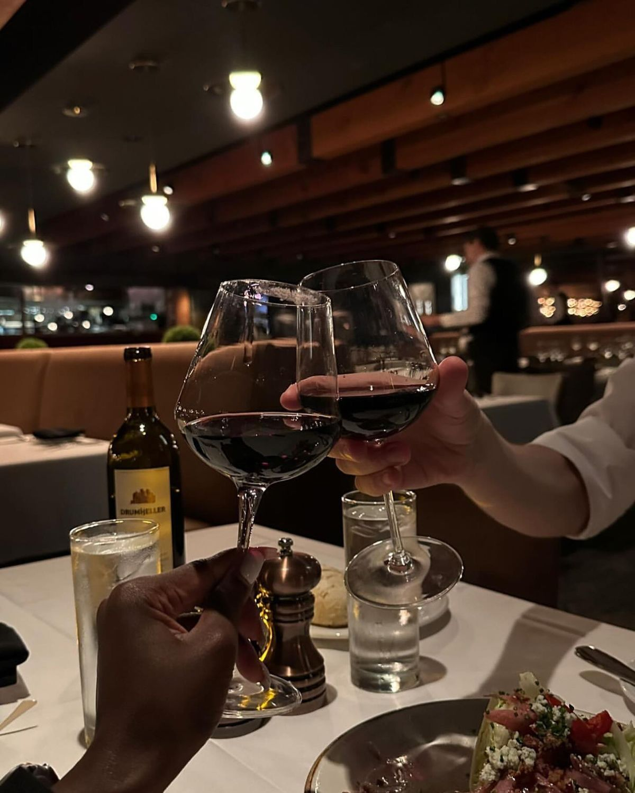

Savorè, Where you get
Flawless
Timeless
Classy
Exclusive
Mergaviglioso
Flawless
Taste And Experience.
What Happens when every detail is intentional? Step Into Our World And Experience a 5-STAR restaurant feel, food and top notch customer services.
